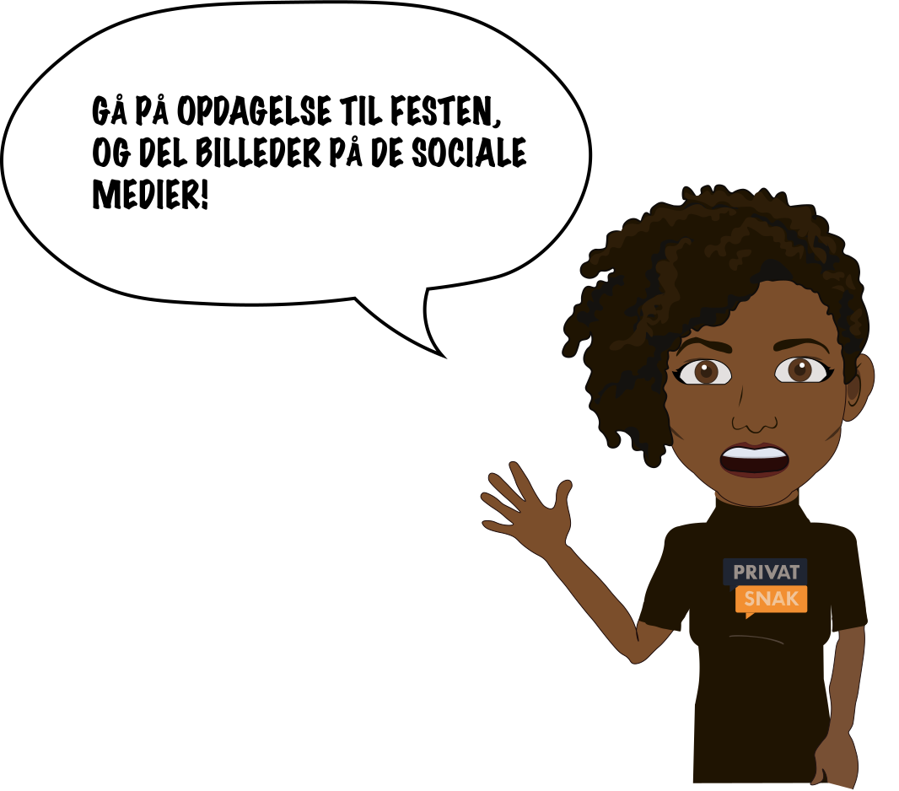
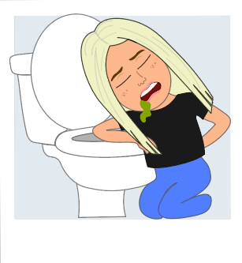
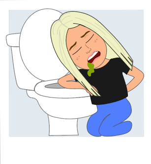

Assetliste
Startskærm, spilskærm og slutskærme
Spil elementer
 

Lydfiler
Vores spil har i alt 3 lydfiler. Vi har en trist violinlyd, som bliver spillet når man tabt. Vi har en jubel lyd til når man vinder, og endeligt har vi en lyd fra en dommerhammer som skal indikere at du har svaret forkert.